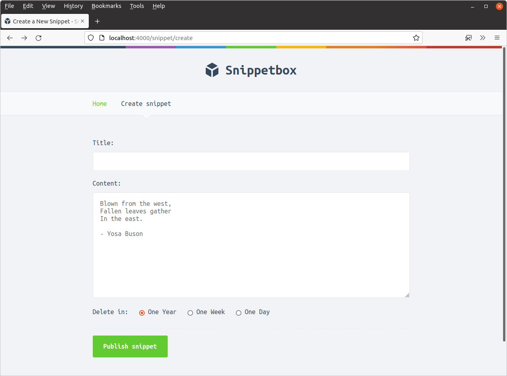
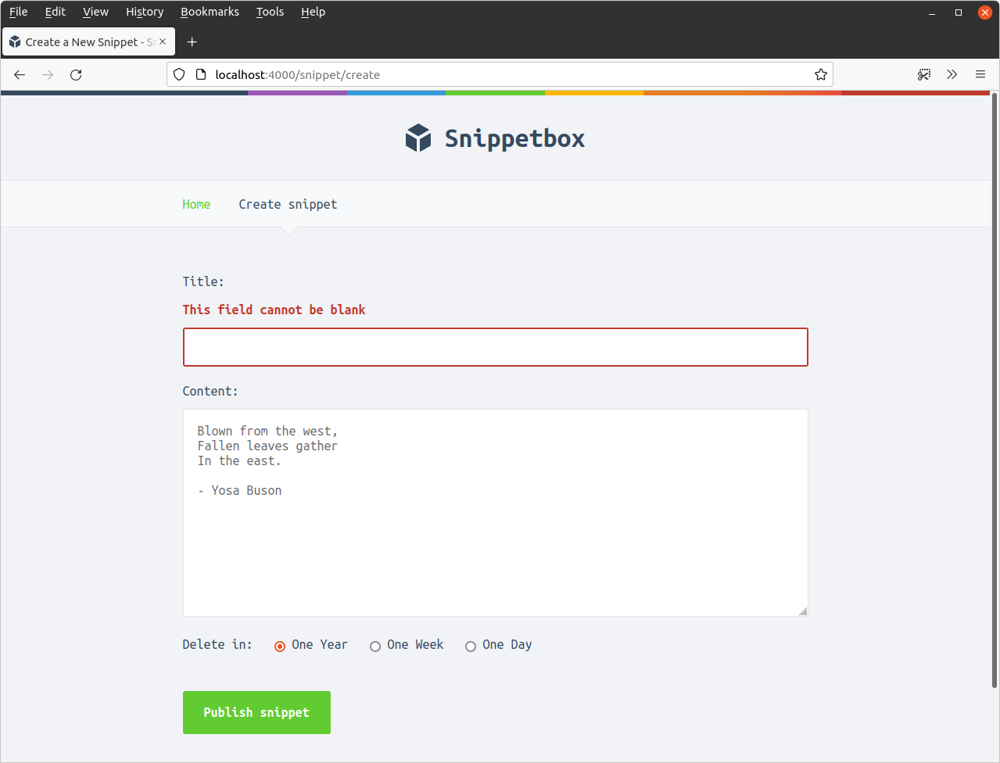

نمایش خطاها و پر کردن مجدد فیلدها (Displaying Errors and Repopulating Fields)
در این بخش، نحوه نمایش خطاها (Displaying Errors) و پر کردن مجدد فیلدها (Repopulating Fields) را در فرم بررسی میکنیم. این کار به کاربران کمک میکند تا خطاهای اعتبارسنجی (Validation Errors) را به راحتی مشاهده و اصلاح کنند.
برای شروع، بیایید یک نوع فرم (Form Type) جدید برای نگهداری دادههای فرم (Form Data) و خطاهای اعتبارسنجی (Validation Errors) ایجاد کنیم:
package main import ( "html/template" "path/filepath" "time" "snippetbox.alexedwards.net/internal/models" ) // Add a Form field with the type "any". type templateData struct { CurrentYear int Snippet models.Snippet Snippets []models.Snippet Form any } ...
ما از این فیلد Form برای ارسال خطاهای اعتبارسنجی و دادههای قبلاً ارسال شده به قالب هنگام نمایش مجدد فرم استفاده خواهیم کرد.
سپس به فایل cmd/web/handlers.go برویم و یک ساختار snippetCreateForm جدید برای نگهداری دادههای فرم و هرگونه خطای اعتبارسنجی تعریف کنیم، و هندلر snippetCreatePost خود را بهروزرسانی کنیم تا از آن استفاده کند.
به این صورت:
package main ... // Define a snippetCreateForm struct to represent the form data and validation // errors for the form fields. Note that all the struct fields are deliberately // exported (i.e. start with a capital letter). This is because struct fields // must be exported in order to be read by the html/template package when // rendering the template. type snippetCreateForm struct { Title string Content string Expires int FieldErrors map[string]string } func (app *application) snippetCreatePost(w http.ResponseWriter, r *http.Request) { err := r.ParseForm() if err != nil { app.clientError(w, http.StatusBadRequest) return } // Get the expires value from the form as normal. expires, err := strconv.Atoi(r.PostForm.Get("expires")) if err != nil { app.clientError(w, http.StatusBadRequest) return } // Create an instance of the snippetCreateForm struct containing the values // from the form and an empty map for any validation errors. form := snippetCreateForm{ Title: r.PostForm.Get("title"), Content: r.PostForm.Get("content"), Expires: expires, FieldErrors: map[string]string{}, } // Update the validation checks so that they operate on the snippetCreateForm // instance. if strings.TrimSpace(form.Title) == "" { form.FieldErrors["title"] = "This field cannot be blank" } else if utf8.RuneCountInString(form.Title) > 100 { form.FieldErrors["title"] = "This field cannot be more than 100 characters long" } if strings.TrimSpace(form.Content) == "" { form.FieldErrors["content"] = "This field cannot be blank" } if form.Expires != 1 && form.Expires != 7 && form.Expires != 365 { form.FieldErrors["expires"] = "This field must equal 1, 7 or 365" } // If there are any validation errors, then re-display the create.tmpl template, // passing in the snippetCreateForm instance as dynamic data in the Form // field. Note that we use the HTTP status code 422 Unprocessable Entity // when sending the response to indicate that there was a validation error. if len(form.FieldErrors) > 0 { data := app.newTemplateData(r) data.Form = form app.render(w, r, http.StatusUnprocessableEntity, "create.tmpl", data) return } // We also need to update this line to pass the data from the // snippetCreateForm instance to our Insert() method. id, err := app.snippets.Insert(form.Title, form.Content, form.Expires) if err != nil { app.serverError(w, r, err) return } http.Redirect(w, r, fmt.Sprintf("/snippet/view/%d", id), http.StatusSeeOther) }
خب، حالا وقتی خطاهای اعتبارسنجی وجود دارد، قالب create.tmpl را مجدداً نمایش میدهیم و دادههای قبلی و خطاهای اعتبارسنجی را در یک ساختار snippetCreateForm از طریق فیلد Form دادههای قالب ارسال میکنیم.
اگر مایل هستید، باید بتوانید در این مرحله برنامه را اجرا کنید و کد باید بدون هیچ خطایی کامپایل شود.
بهروزرسانی قالب HTML
کار بعدی که باید انجام دهیم بهروزرسانی قالب create.tmpl برای نمایش خطاهای اعتبارسنجی و پر کردن مجدد دادههای قبلی است.
پر کردن مجدد دادههای فرم به اندازه کافی ساده است - باید بتوانیم این را در قالبها با استفاده از تگهایی مانند {{.Form.Title}} و {{.Form.Content}} رندر کنیم، به همان روشی که قبلاً در کتاب دادههای اسنیپت را نمایش دادیم.
برای خطاهای اعتبارسنجی، نوع زیربنایی فیلد FieldErrors ما یک map[string]string است که از نامهای فیلد فرم به عنوان کلید استفاده میکند. برای نقشهها، میتوان به مقدار یک کلید خاص با زنجیره کردن نام کلید دسترسی پیدا کرد. بنابراین، به عنوان مثال، برای رندر کردن یک خطای اعتبارسنجی برای فیلد title میتوانیم از تگ {{.Form.FieldErrors.title}} در قالب خود استفاده کنیم.
با این در نظر گرفتن، بیایید فایل create.tmpl را بهروزرسانی کنیم تا دادهها را مجدداً پر کند و پیامهای خطا را برای هر فیلد، در صورت وجود، نمایش دهد.
{{define "title"}}Create a New Snippet{{end}}
{{define "main"}}
<form action='/snippet/create' method='POST'>
<div>
<label>Title:</label>
{{with .Form.FieldErrors.title}}
<label class='error'>{{.}}</label>
{{end}}
<input type='text' name='title' value='{{.Form.Title}}'>
</div>
<div>
<label>Content:</label>
{{with .Form.FieldErrors.content}}
<label class='error'>{{.}}</label>
{{end}}
<textarea name='content'>{{.Form.Content}}</textarea>
</div>
<div>
<label>Delete in:</label>
{{with .Form.FieldErrors.expires}}
<label class='error'>{{.}}</label>
{{end}}
<input type='radio' name='expires' value='365' {{if (eq .Form.Expires 365)}}checked{{end}}>> One Year
<input type='radio' name='expires' value='7' {{if (eq .Form.Expires 7)}}checked{{end}}>> One Week
<input type='radio' name='expires' value='1' {{if (eq .Form.Expires 1)}}checked{{end}}>> One Day
</div>
<div>
<input type='submit' value='Publish snippet'>
</div>
</form>
{{end}}
امیدوارم این نشانهگذاری و استفاده ما از اکشنهای قالبسازی Go به طور کلی واضح باشد - فقط از تکنیکهایی استفاده میکند که قبلاً در کتاب دیده و بحث کردهایم.
یک کار نهایی باقی مانده است. اگر الان سعی کنیم برنامه را اجرا کنیم، وقتی برای اولین بار از فرم در http://localhost:4000/snippet/create بازدید میکنیم، یک خطای 500 Internal Server Error دریافت خواهیم کرد. این به این دلیل است که هندلر snippetCreate ما در حال حاضر مقداری برای فیلد templateData.Form تنظیم نمیکند، به این معنی که وقتی Go سعی میکند یک تگ قالب مانند {{with .Form.FieldErrors.title}} را ارزیابی کند، منجر به خطا میشود زیرا Form برابر با nil است.
بیایید با بهروزرسانی هندلر snippetCreate خود این مشکل را برطرف کنیم تا یک نمونه جدید snippetCreateForm را مقداردهی اولیه کند و آن را به قالب ارسال کند، مانند این:
package main ... func (app *application) snippetCreate(w http.ResponseWriter, r *http.Request) { data := app.newTemplateData(r) // Initialize a new snippetCreateForm instance and pass it to the template. // Notice how this is also a great opportunity to set any default or // 'initial' values for the form --- here we set the initial value for the // snippet expiry to 365 days. data.Form = snippetCreateForm{ Expires: 365, } app.render(w, r, http.StatusOK, "create.tmpl", data) } ...
حالا که این کار انجام شد، لطفاً برنامه را مجدداً راهاندازی کنید و از http://localhost:4000/snippet/create در مرورگر خود بازدید کنید. باید متوجه شوید که صفحه بدون هیچ خطایی به درستی رندر میشود.
سپس سعی کنید مقداری محتوا اضافه کنید و زمان انقضای پیشفرض را تغییر دهید، اما فیلد عنوان را خالی بگذارید مانند این:

پس از ارسال، اکنون باید فرم را مجدداً با محتوای اسنیپت و گزینه انقضای صحیح پر شده ببینید، و یک پیام خطای "این فیلد نمیتواند خالی باشد" در کنار فیلد عنوان مشاهده کنید:

قبل از ادامه، لطفاً کمی وقت صرف بازی با فرم و قوانین اعتبارسنجی کنید تا مطمئن شوید که همه چیز همانطور که انتظار دارید کار میکند.
اطلاعات تکمیلی
مسیریابی RESTful
اگر پیشزمینهای در Ruby-on-Rails، Laravel یا مشابه آن دارید، ممکن است تعجب کنید که چرا مسیرها و هندلرهای خود را بیشتر 'RESTful' نکردهایم تا به این شکل باشند:
| الگوی مسیر | هندلر | عملیات |
|---|---|---|
| GET /snippets | snippetIndex | نمایش صفحه اصلی |
| GET /snippets/{id} | snippetView | نمایش یک اسنیپت خاص |
| GET /snippets/create | snippetCreate | نمایش فرم برای ایجاد یک اسنیپت جدید |
| POST /snippets | snippetCreatePost | ذخیره یک اسنیپت جدید |
چند دلیل وجود دارد.
دلیل اول به خاطر مسیرهای همپوشان است - یک درخواست HTTP به /snippets/create به طور بالقوه با هر دو مسیر GET /snippets/{id} و GET /snippets/create مطابقت دارد. در برنامه ما، مقادیر شناسه اسنیپت همیشه عددی هستند بنابراین هرگز همپوشانی 'واقعی' بین این دو مسیر وجود نخواهد داشت - اما تصور کنید اگر مقادیر شناسه اسنیپت ما توسط کاربر تولید میشدند، و یا یک رشته 6 کاراکتری تصادفی بودند، و امیدوارم بتوانید پتانسیل مشکل را ببینید. به طور کلی، مسیرهای همپوشان میتوانند منبع باگها و رفتار غیرمنتظره در برنامه شما باشند، و بهتر است در صورت امکان از آنها اجتناب کنید - یا اگر نمیتوانید، با دقت و احتیاط از آنها استفاده کنید.
دلیل دوم این است که فرم HTML ارائه شده در /snippets/create باید هنگام ارسال به /snippets پست شود. این بدان معناست که وقتی فرم HTML را برای نمایش هرگونه خطای اعتبارسنجی مجدداً رندر میکنیم، URL در مرورگر کاربر نیز به /snippets تغییر خواهد کرد. YMMV در مورد اینکه آیا این را مشکل میدانید یا نه - اکثر کاربران به URLها نگاه نمیکنند، اما من فکر میکنم از نظر UX کمی ناهموار و گیجکننده است... به خصوص اگر یک درخواست GET به /snippets معمولاً چیز دیگری را رندر کند (مثل لیستی از همه اسنیپتها).
واژهنامه اصطلاحات فنی
| اصطلاح فارسی | معادل انگلیسی | توضیح |
|---|---|---|
| نمایش خطاها | Displaying Errors | نشان دادن پیامهای خطا به کاربر |
| پر کردن مجدد فیلدها | Repopulating Fields | بازگرداندن مقادیر قبلی به فیلدهای فرم |
| خطاهای اعتبارسنجی | Validation Errors | پیامهای خطا در مورد دادههای نامعتبر |
| نوع فرم | Form Type | ساختار داده برای نگهداری اطلاعات فرم |
| دادههای فرم | Form Data | اطلاعات وارد شده توسط کاربر در فرم |
| فیلدهای فرم | Form Fields | المانهای ورودی در فرم |
| مقادیر پیشفرض | Default Values | مقادیر اولیه فیلدهای فرم |
| بازخورد کاربر | User Feedback | پیامهای راهنما برای کاربر |
| تجربه کاربری | User Experience | کیفیت تعامل کاربر با فرم |
| رابط کاربری | User Interface | نحوه نمایش و چیدمان فرم |